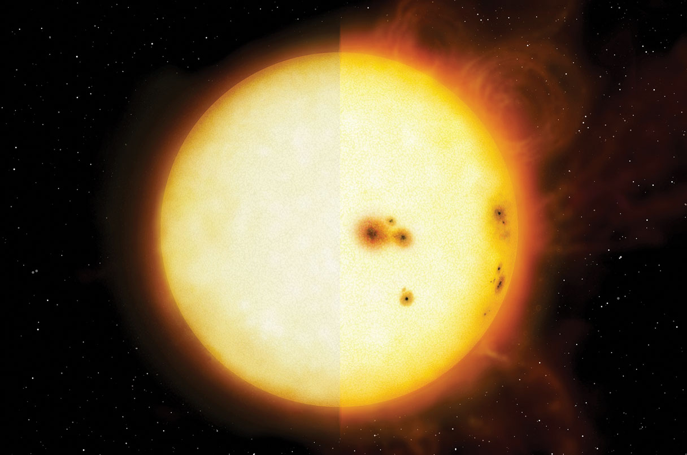

About Me
I am a postdoctoral scholar at UC Irvine working with Prof. Paul Robertson.
I received my Ph.D from Penn State University in 2021 and my Bachelors from The Ohio State University in 2015.
Research
My research interests lie in the intersection of exoplanet science and stellar astrophysics. I work to better understand stellar variability in radial velocity measurements, so that we can more easily detect low-mass planets.
